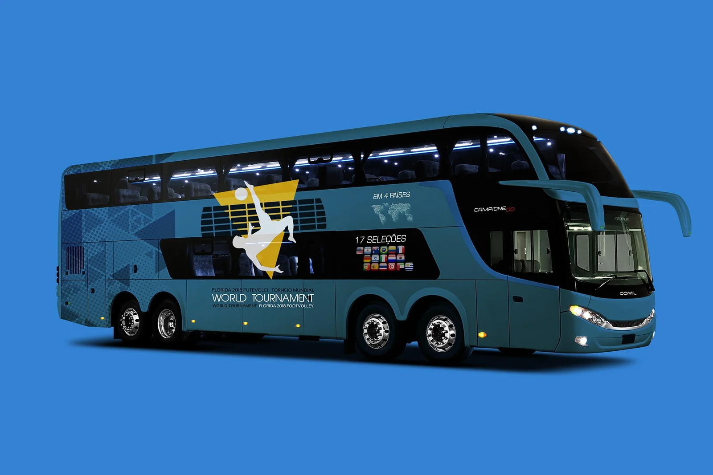
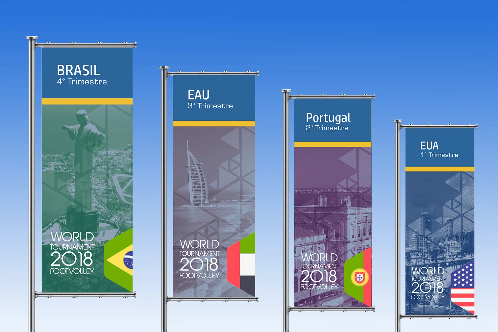
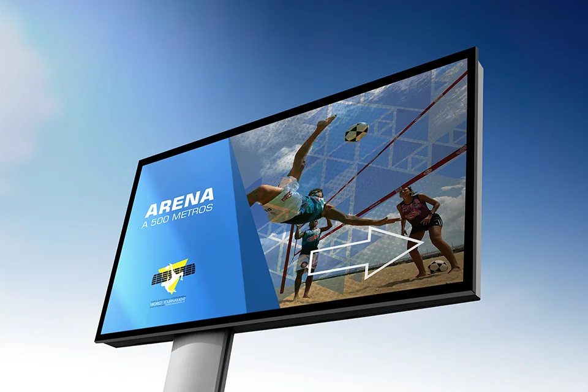
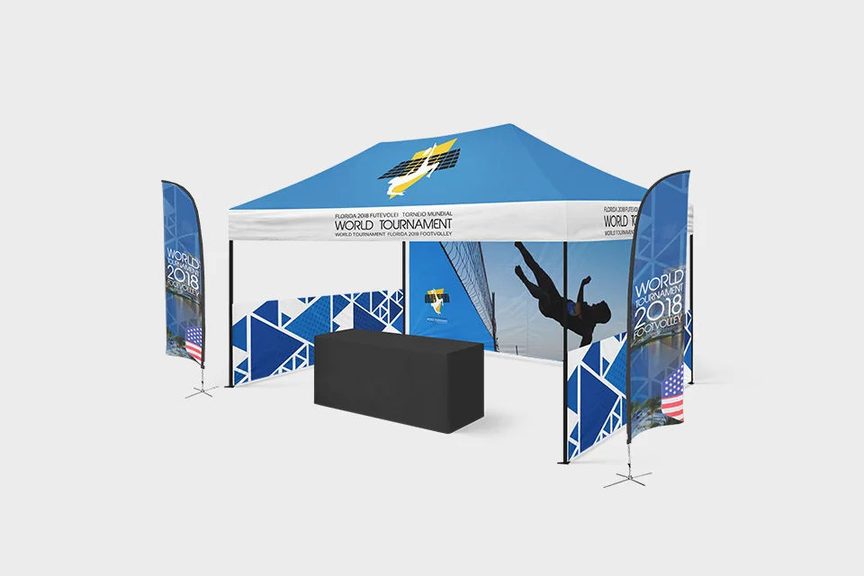
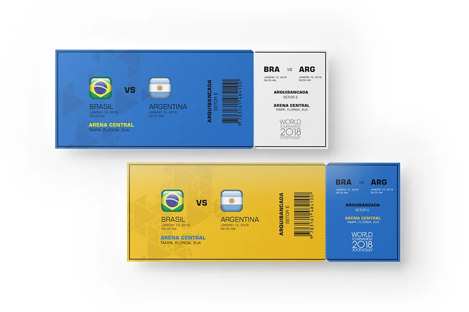
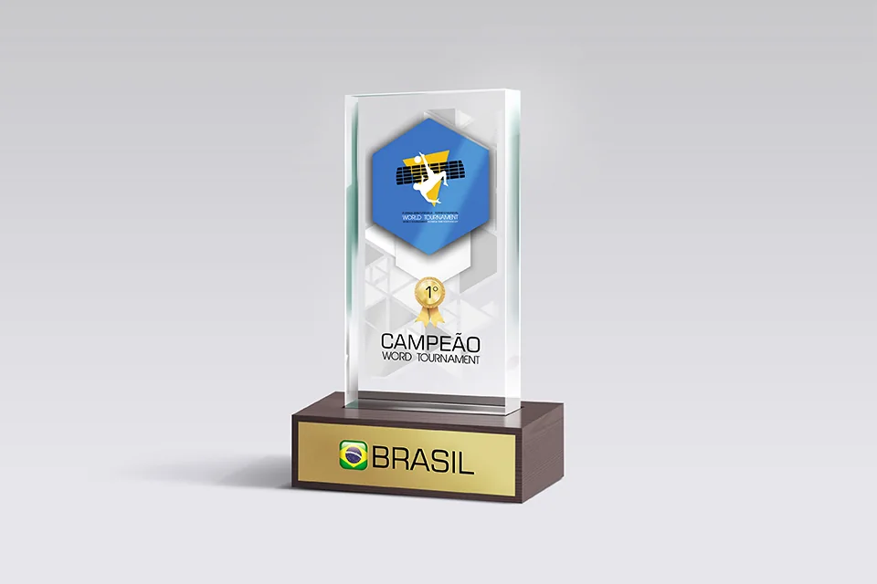
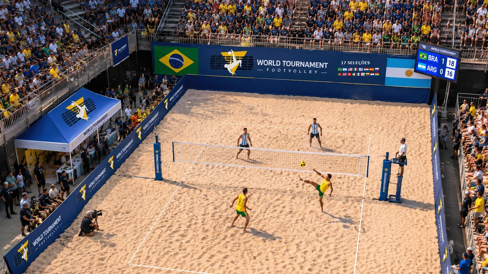

World Footvolley Tournament
Orquestrando uma experiência esportiva: articular mobilidade, identidade e 17 seleções em um torneio mundial de futevôlei em Miami.






Ônibus do torneio — a identidade aplicada à mobilidade das delegações.
Contexto
Eventos esportivos são sistemas temporários de serviço. Atletas, equipes, organização, parceiros e público dependem de uma sequência de contatos coordenados que começa antes das partidas e continua depois delas.
O World Footvolley Tournament (WFT) foi um torneio mundial de futevôlei realizado em 2018 em Miami, na Flórida, com 17 seleções. As peças aplicam a identidade do evento ao transporte, às ruas, à sinalização, aos ingressos e à premiação: mobilidade e orientação integradas à comunicação do torneio.
- Setor
- Esporte · eventos internacionais
- Evento
- World Footvolley Tournament (WFT)
- Local e ano
- Miami, Flórida · 2018
- Meu papel
- Design de serviços · Discovery · Estratégia
Problema
Como criar continuidade entre experiências que costumam ser fragmentadas?
Em um torneio internacional, informações, deslocamentos, horários, recepção, competição e relacionamento com parceiros tendem a funcionar em separado. Quando cada interação opera isoladamente, a qualidade percebida do evento pode cair mesmo que as partidas ocorram conforme o planejado.
Pergunta de pesquisa
Questão central
Como podemos organizar os pontos de contato físicos e informacionais de um torneio internacional para que atletas, equipes, organização e parceiros vivenciem uma experiência clara, coordenada e reconhecível?
- Q.01Como organizar os pontos de contato físicos e informacionais do torneio?
- Q.02Como coordenar a experiência de atletas, equipes, organização e parceiros?
- Q.03Como tornar o evento reconhecível em cada deslocamento?
Partes interessadas
O ecossistema de referência inclui atletas, delegações, comissão técnica, organização, fornecedores de transporte, operadores locais, patrocinadores, equipes de apoio, comunicação e espectadores.
A cena reúne os atores em campo: atletas, arbitragem, imprensa, organização, patrocinadores e público, com Brasil e Argentina em quadra, como no ingresso. Os papéis específicos e a participação de cada um nas decisões do projeto precisam ser comprovados por registros operacionais.

Atletas · Arbitragem · PúblicoEcossistema em campoMetodologia
- 01
Entender - 02
Explorar - 03
Conectar - 04
Projetar - 05
Validar
| Método | Objetivo | Base de análise | Etapa |
|---|---|---|---|
| Mapa de stakeholders | Identificar quem participa do torneio e como se relaciona | Atletas, delegações, organização e parceiros | Entender |
| Jornada da delegação | Descrever a experiência da confirmação ao encerramento | Da chegada a Miami ao retorno | Explorar |
| Blueprint de chegada e deslocamento | Relacionar o frontstage e o backstage da mobilidade | Programação, roteiros, fornecedores e horários | Conectar |
| Matriz de pontos de contato | Definir princípios para a identidade de serviço | Veículo, sinalização, comunicação e equipe | Projetar |
As peças evidenciam pontos de contato físicos, mas não documentam a execução dessas ferramentas como etapas históricas do projeto.
Pesquisa
Números da pesquisa
6
Pontos de contato com a mesma identidade
2018
Edição em Miami, Flórida
7
Etapas na jornada da delegação
5
Temas de pesquisa
As perguntas de pesquisa se concentram nas necessidades de cada grupo: o transporte é previsível? As orientações chegam em diferentes idiomas? Veículos e equipes são fáceis de identificar? Como os horários são geridos e como os parceiros ganham visibilidade?
Na ausência de registros de pesquisa, esses temas são questões de Discovery, e não achados empíricos confirmados. Entrevistas, horas de campo e participantes não foram informados.
Evidências
“World Tournament · Florida 2018 Footvolley”
E.01 — Ônibus · identificação
“Em 4 países” · “17 seleções”, com as bandeiras
E.02 — Ônibus · escopo comunicado
A mesma identidade no ônibus, nos banners, na sinalização, na tenda, nos ingressos e no troféu
E.03 — Observação · sistema de pontos de contato
“Arena a 500 metros”
E.04 — Outdoor · sinalização de acesso
“Brasil x Argentina · 12 de janeiro de 2018 · Arena Central · Arquibancada, setor E”
E.05 — Ingresso
“Brasil · 4º trimestre”, “EAU · 3º”, “Portugal · 2º”, “EUA · 1º”
E.06 — Banners de rua
As peças mostram a intenção de tornar mobilidade, orientação e acesso parte da experiência do evento, mas não comprovam que operaram em campo nem que foram avaliadas por participantes.
Descobertas
- I.01
Transporte e orientação fazem parte do produto-evento; não são um apoio invisível.
Evidências · E.03 · E.04
- I.02
Um veículo reconhecível cumpre funções simultâneas: logística, sinalização, pertencimento e exposição de marca.
Evidências · E.01 · E.04
- I.03
Ao integrar identidade e serviço, do transporte ao ingresso, o evento cria uma experiência mais contínua para os participantes.
Evidências · E.03 · E.05
Jornada / Ecossistema
Curva ilustrativa da experiência esperada, sem dados medidos. Frontstage: comunicação, sinalização, equipe e veículo. Backstage: programação, roteiros, fornecedores, coordenação de horários e contingências. Das etapas, estão materializados o transporte, a sinalização de acesso, o ingresso e a premiação.
Oportunidades
- O.01 · I.01
Como podemos centralizar a informação para delegações e equipes?
- O.02 · I.02
Como podemos padronizar visualmente os pontos de contato do torneio?
- O.03 · I.03
Como podemos deixar claras as responsabilidades e tratar exceções, como atrasos e mudanças de programação?
- O.04 · I.01
Como podemos oferecer linguagem e orientação acessíveis a públicos internacionais?
Impacto
Números de impacto
17
Seleções nacionais aderiram ao torneio · adoção
12.000
Pessoas de público médio · engajamento
28
Partidas disputadas
14
Dias de torneio
Em 14 dias de torneio em Miami, em 2018, 17 seleções nacionais disputaram 28 partidas, com público médio de 12.000 pessoas. No design, isso pedia um sistema de pontos de contato com uma só identidade, do ônibus ao troféu, legível tanto para as delegações quanto para quem assistia. Os 6 pontos de contato e as 7 etapas da jornada são números da pesquisa e ficam no capítulo 06.
Público, partidas e duração informados pelo autor. Patrocínio, receita e satisfação não foram registrados e não são reivindicados.
Entregáveis
- ENT.01
Identidade aplicada ao ônibus de transporte das delegações
Formato · ponto de contato físico · Operação não informada
- ENT.02
Banners de rua para Brasil, EAU, Portugal e EUA, com o trimestre de cada país
Formato · comunicação urbana · Implantação não informada
- ENT.03
Sinalização de acesso à arena, tenda com bandeiras, ingressos e troféu de campeão
Formato · orientação, ambientação, acesso e premiação · Produção não informada
Recomendação
| Frente | Recomendação | Indicador | Base |
|---|---|---|---|
| F1 | Desenhar um blueprint da mobilidade e identificar os momentos críticos de espera e transferência | Pontualidade e erros de deslocamento | O.03 · I.01 |
| F2 | Definir comunicação multicanal, com orientações consistentes no físico e no digital | Solicitações de suporte | O.01 · O.04 |
| F3 | Padronizar a identidade de serviço em veículos, sinalização e equipe | Satisfação das delegações | O.02 · I.02 |
Numa próxima edição, esses indicadores mostrariam se a coordenação da mobilidade se traduz em uma experiência mais clara para as delegações.
Aprendizados
O que aprendi
Service Design amplia a pergunta de “como o evento deve parecer?” para “como suas partes precisam funcionar juntas?”.
O que levo adiante
A qualidade de um torneio não depende apenas do espetáculo esportivo, mas das transições e dependências que tornam a experiência possível.